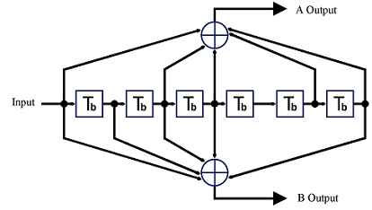

String data decoding
Convolutional decoder with puncturing.
Contents
Syntax
SDATA = decode_string(CDATA, R, M)
Description
The function decode_string(CDATA, R, M)returns a set of decoded bits (SDATA) from the received parameters. The graphical representation of the convolutional encoder used in the 802.11p standard is as follows.

Input Arguments
- CDATA
Input vector, specified as a coded bit vector.
- R
Coding rate.
- M
Modulation scheme.
Output arguments
- SDATA
Decoded bits vector.
Example
The function decode_string(CDATA, R, M) is called.
function SDATA = decode_string(CDATA, R, M)
Definition of the generating polynomials g0, g1 and the restriction length k for the creation of the Trellis diagram.
g0 = 133;
g1 = 171;
k = 7;
trellis = poly2trellis(k, [g1 g0]);
tblen = 0;
Verification of the convolution rate and selection of the puncturing pattern according to the IEEE 802.11 standard.
switch R case 1/2 punctPattern = [1 1]; % without puncturing tblen = 24*log2(M); case 2/3 punctPattern = [1 1 1 0]; % puncturing pattenr tblen = 96; case 3/4 punctPattern = [1 1 1 0 0 1]; % puncturing pattenr switch M case 2 tblen = 36; case 4 tblen = 96; case 16 tblen = 96; case 64 tblen = 96; end otherwise errordlg('INVALID CODING RATE'); end
Decoding of the data according to the Trellis diagram created with the selected puncturing pattern.
punctPattern = fliplr(punctPattern);
SDATA = vitdec(CDATA,trellis,tblen,'trunc','hard',punctPattern);
end
See also